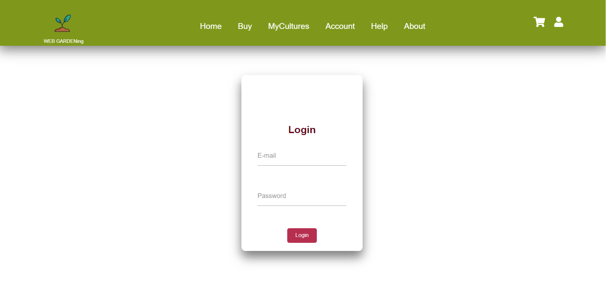
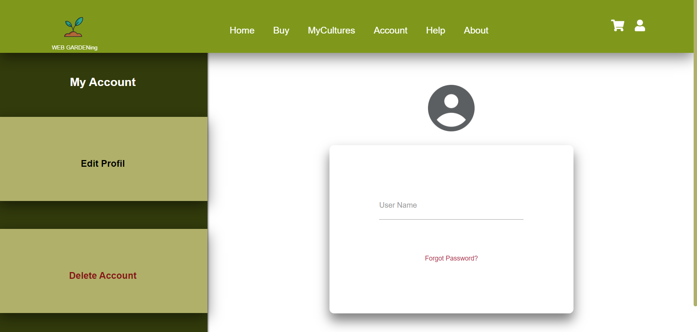
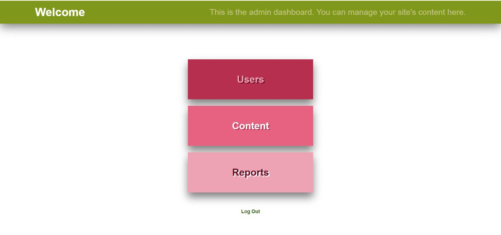

Pentru a se putea conecta la aplicație utilizatorul va trebui să își treacă credințialele
(mariatodirel7@gmail.com, maria) în aceasta
pagina, ca apoi să fie redirecționat spre pagina sa de profil. Tot de aici, administrator se poate loga
cu credințialele sale (admin, admin).



1. Apăsați - Codul pentru Admin page
-- Codul HTML --
<!DOCTYPE html>
<html>
<head>
<title>Admin Page</title>
<link rel="stylesheet" href="all.css">
<meta charset="UTF-8">
<meta http-equiv="X-UA-Compatible" content="IE=edge">
<meta name="viewport" content="width=device-width, initial-scale=1.0">
<link rel="stylesheet" href="https://cdnjs.cloudflare.com/ajax/libs/font-awesome/5.15.4/css/all.min.css">
<link rel="stylesheet" href="css/index.css">
<link rel="stylesheet" href="css/all.css">
<link rel="stylesheet" href="css/index2.css">
<script src="js/myJs.js" defer></script>
</head>
<body>
<div class="admin-page">
<header class="header">
<h2>Welcome</h2>
<p>This is the admin dashboard. You can manage your site's content here.</p>
</header>
<div class="dashboard">
<div class="users" id="users-button ">
<h2>
Users
</h2>
</div>
<div class="content" id="content-button">
<h2>
Content
</h2>
</div>
<div class="reports" id="reports-button">
<h2>
Reports
</h2>
</div>
<a href="account.html">
Log Out
</a>
</div>
</div>
</div>
<script src="js/myJs.js"></script>
</body>
</html>
-- Codul CSS --
/*Admin page*/
.admin-page{
background-color:white;
display: flex;
justify-content: center;
align-items: center;
flex-direction: column;
}
.admin-page .header{
height: 70px;
background-color: #7f981b;
}
.admin-page .header p{
color:#c5c581;
font-size: 25px;
}
.admin-page .header h2{
color:white;
font-size:35px;
}
.admin-page .dashboard{
margin-top: 80px;
width:100vw;
height: 80vh;
display: flex;
justify-content: center;
align-items: center;
flex-direction: column;
}
.admin-page .dashboard .users{
margin-top: 100px;
display: flex;
justify-content: center;
align-items: center;
flex-direction: column;
background-color: #b62f4f;
width: 25%;
height:25%;
box-shadow: 0px 15px 25px rgba(0, 0, 0, 0.5);
}
.admin-page .dashboard .users:hover{
letter-spacing: 3px;
cursor: pointer;
background-color: #f5c1cd;
}
.admin-page .dashboard .users h2{
text-align: center;
text-align: center;
color:#eea3b4;
font-size: 30px;
font-weight: bold;
text-shadow:#66071d 3px 2px;
}
.admin-page .dashboard .content{
display: flex;
justify-content: center;
align-items: center;
flex-direction: column;
background-color: #e76281;
width: 25%;
height:25%;
margin-top:20px;
box-shadow: 0px 15px 25px rgba(0, 0, 0, 0.5);
}
.admin-page .dashboard .content:hover{
letter-spacing: 3px;
cursor: pointer;
background-color: #f5c1cd;
}
.admin-page .dashboard .content h2{
text-align: center;
text-align: center;
color:white;
font-size: 30px;
font-weight: bold;
text-shadow:var(--darkerstpink) 3px 2px;
}
.admin-page .dashboard .reports
{
display: flex;
justify-content: center;
align-items: center;
flex-direction: column;
background-color: #eea3b4;
width: 25%;
height:25%;
margin-top:20px;
box-shadow: 0px 15px 25px rgba(0, 0, 0, 0.5);
}
.admin-page .dashboard .reports:hover{
letter-spacing: 3px;
cursor: pointer;
background-color: #f5c1cd;
}
.admin-page .dashboard .reports h2{
text-align: center;
text-align: center;
color:#66071d;
font-size: 30px;
font-weight: bold;
text-shadow:white 3px 2px ;
}
.admin-page .dashboard a{
margin-top: 50px;
color: var(--vivagreen);
font-size:15px;
font-weight: bold;
}
@media (max-width:991px){
html{
font-size: 55%;
}
.header{
padding:1.5rem 2rem;
display: flex;
justify-content: space-between;
align-items: center;
}
section{
padding:2rem;
}
.header .navbar a{
margin:0 0.4rem;
margin-left:40px;
font-size: 20px;
}
html{
font-size: 50%;
}
.header .icons div {
font-size: 25px;
}
.header .icons div:first-child{
margin-left: 15px;
}
.header .icons div:last-child{
margin-right: 10px;
}
}
@media (max-width:768px){
#menu-btn{
display: inline-block;
}
.header .navbar{
position: absolute;
top:100%; right: -100%;
background: #fff;
width: 30rem;
height: 200px;
align-items: flex-end;
justify-content: flex-end;
box-shadow: 0px 15px 25px rgba(0, 0, 0, 0.5);
}
.header .navbar.active{
right:0;
}
.header .navbar a{
color:var(--black);
display: block;
margin:auto;
padding:.5rem;
font-size: 2rem;
}
.header .icons div {
font-size: 20px;
}
.header .icons div:first-child{
margin-left: 500px;
}
}
@media (max-width:540px)
{
.header .icons div:first-child{
margin-left: 200px;
}
.navbar{
display: block;
align-items: flex-start;
flex-direction: column;
}
.navbar a {
margin:0 0 0 0;
}
.admin-page .dashboard .users h2{
font-size:20px;
}
.admin-page .dashboard .reports h2{
font-size:20px;
}
.admin-page .dashboard .content{
width:70%;
height:10%;
}
.admin-page .dashboard .content h2{
font-size:20px;
}
.admin-page .dashboard .users{
width:70%;
height:10%;
}
.admin-page .dashboard .reports{
width:70%;
height:10%;
}
.admin-page .header p{
margin-left:50px;
font-size: 15px;
}
.admin-page .header h2{
margin-left: 20px;;
color:white;
font-size:20px;}
2. Apăsați - Codul pentru Login Form
-- Codul HTML --
<form id="login-form">
<h2>Login</h2>
<div class="inputBox">
<input type="text" name="email" required="">
<label>E-mail</label>
</div>
<div class="inputBox">
<input type="password" name="password" required="">
<label>Password</label>
</div>
<input type="submit" value="Login">
</form>
<div class="account-background" id ="account-info" style="display: none;">
<div class="account-info" >
<h2>
My Account
</h2>
<div class="column" id="edit-button">
<h2>
Edit Profil
</h2>
</div>
<div class="column" id="delete">
<h2>
Delete Account
</h2>
</div>
-- Codul CSS --
.account-section form{
width: 80%;
height: 65%;
}
.account-background{
display: flex;
flex-direction: column;
align-items: center;
justify-content: center;
}
.account-background .account-info{
margin-top:0;
width:100vw;
height:30vh;
}
.account-background .account-info .column{
margin-top: 50px;
height:27%;
}
.account-background .account-info .column:nth-of-type(2){
margin-top: 10px;
}
.account-background .account-info h2 {
text-align: center;
margin-top: 20px;
color: white;
font-weight: bold;
font-size: 15px;
}
3. Apăsați - Codul pentru Edit Page
-- Codul HTML --
<div class="edit-page" id="edit-page" style="display: none;">
<div class="img-container">
<img src="photo/profil.png" alt=" ">
</div>
<form>
<div class="inputBoxEdit">
<input type="text" name="username">
<label>User Name</label>
</div>
<a href="#">Forgot Password?</a>
</form>
</div>
-- Codul CSS --
.account-background .edit-page{
flex-direction: column;
display: flex;
justify-content: flex-start;
align-items: center;
}
.account-background .edit-page .img-container{
margin-top:40px;
margin-left: 110px;
}
.account-background .edit-page form{
margin-left: 110px;
width:70vw;
height: 30%;
}